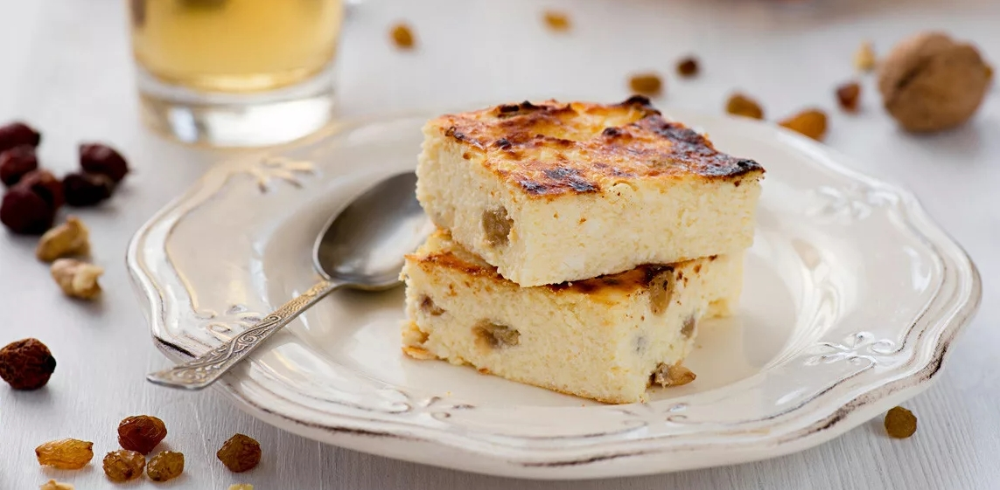

Запеканка

- 3 пачки творога
- 5 яиц
- 270–300 г сметаны
- 200 г сахара
- ваниль
- 120 г изюма
- 1,5 ч.л. разрыхлителя
- 80 г манки
Сначала поставить разогреваться духовку до 170°C.
120 г изюма предварительно вымыть/замочить.
Сначала нужно подготовить творожную основу. В глубокой миске миксером размешать 3 пачки творога с 5 яйцами до однородной массы. Добавить в смесь 270–300 г сметаны, немного соли, 200 г сахара и ваниль. Снова хорошо размешать. Всыпать изюм, 1,5 ч.л. разрыхлителя и 80 г манки. Все аккуратно перемешать лопаткой до равномерного распределения ингредиентов.
Переложить массу в форму для запекания, заранее смазанную маслом или выстеленную бумагой для выпечки. Выпекать при температуре 170°C в течение 45 минут. Затем увеличить температуру до 190°C и готовить еще 10 минут. В завершение включить режим гриль и запекать 3 минуты до подрумянивания верха.
 Назад к списку рецептов
Назад к списку рецептов